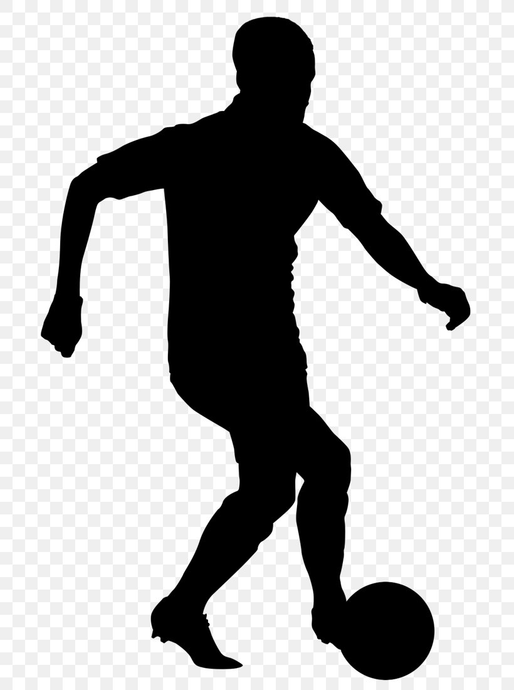
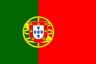
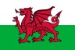
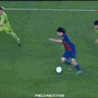
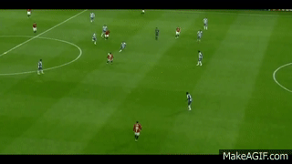
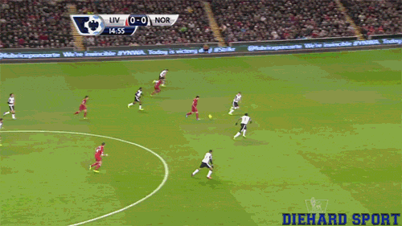
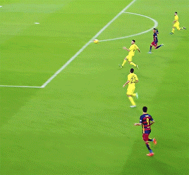
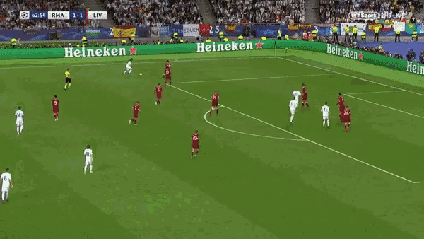
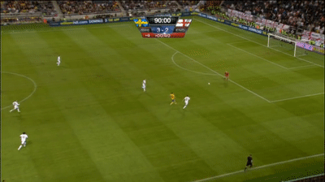

| Player  | Nationality | Position | Career Goals | Career Assists
|
Ballon d'Ors
|
CL Titles |
|---|---|---|---|---|---|---|
| Lionel Messi | Argentina |
Center Forward / Right Wing | 773 | 372 | 7 | 4 |
| Cristiano Ronaldo | Portugal  | Striker / Left Wing | 815 | 272 | 5 | 5 |
| Luis Suárez | Uruguay |
Striker | 523 | 277 | 0 | 1 |
| Neymar Jr | Brazil |
Left Wing / Attacking Midfield | 425 | 224 | 0 | 1 |
| Gareth Bale | Wales  | Right Wing / Attacking Midfield | 224 | 139 | 0 | 5 |
| Zlatan Ibrahimović | Sweden |
Striker | 572 | 202 | 0 | 0 |
| Lionel Messi - Solo Goal vs Getafe :  |
|---|
| Cristiano Ronaldo - Long Shot vs Porto :  |
| Luis Suárez - Long Shot Volley vs Norwich :  |
| Neymar Jr - Sombero Flick Volley vs Villareal :  |
| Gareth Bale - CL Final Bicycle Kick vs Liverpool :  |
| Zlatan Ibrahimović - 40 Yard Bicycle Kick vs England :  |